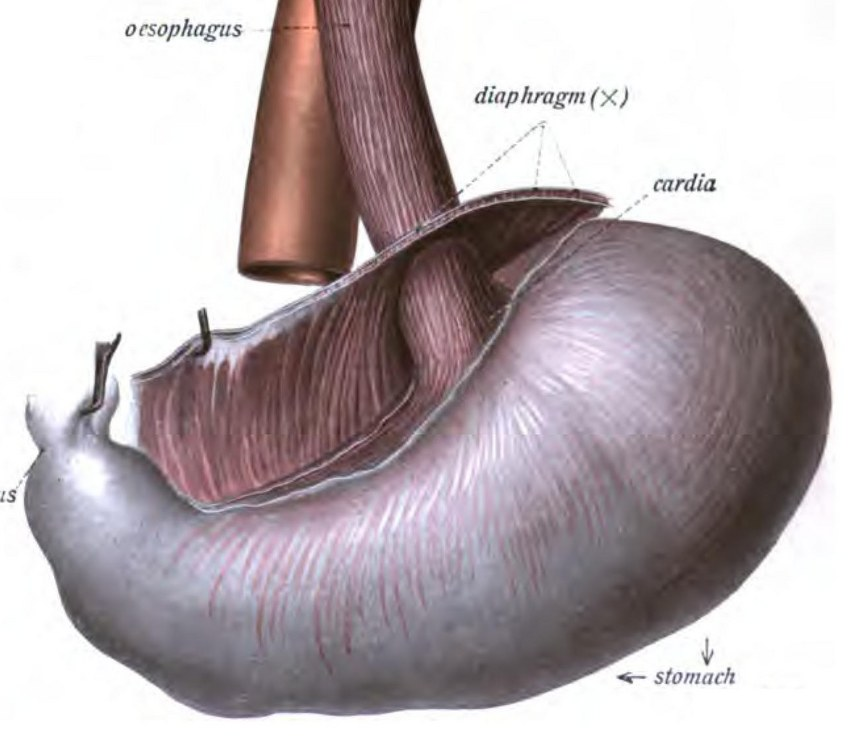
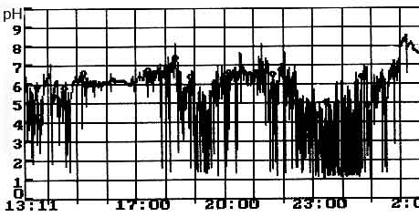
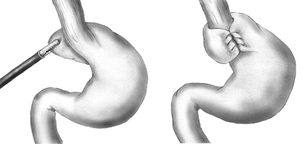
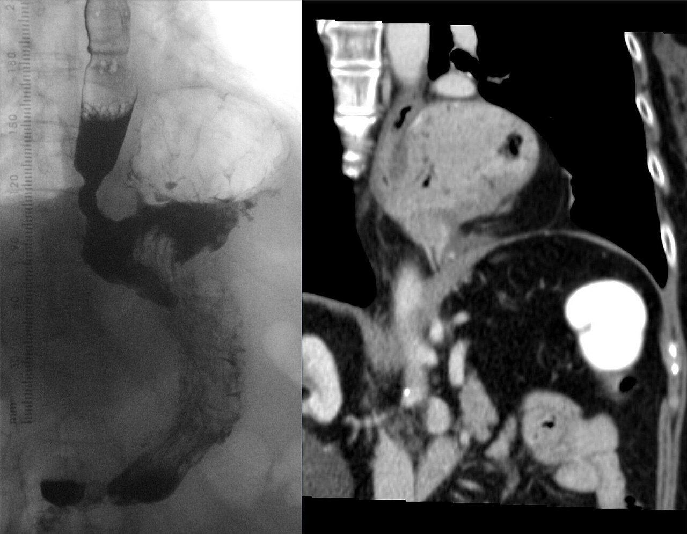

הגישה לחולה עם רפלוקס
GERD ובקע סרעפתי: מנגנון, בירור, טיפול תרופתי, פונדופליקציה ובקע פרא-וושטי
בסוף המפגש תדעו
- להסביר את מנגנון המחסום נגד רפלוקס ומה שובר אותו
- לקחת אנמנזה של רפלוקס ולזהות תסמינים לא טיפוסיים ותסמיני אזהרה
- לבחור בדיקות לפני ניתוח: גסטרוסקופיה, ניטור pH, מנומטריה ובליעת בריום
- לדעת מתי מפנים לניתוח ולהבדיל בין Nissen, Toupet ו-Dor
- לסווג בקע סרעפתי (סוגים I–IV) ולזהות וולוולוס חריף של הקיבה
- להבין את הקשר בין השמנה, רפלוקס וניתוחי ירידה במשקל
המחלה השפירה השכיחה ביותר של הוושט והקיבה
- רוב החולים מסתדרים בטיפול תרופתי. לניתוח יש מקום כשהטיפול התרופתי לא מספיק
- GERD קשור לאדנוקרצינומה של הוושט, למחלות ריאה ולהשמנה
- GERD זו אבחנה, לא תסמין. "יש לי רפלוקס" צריך לתרגם לתסמינים מדויקים
לחץ מול שסתום
בחזה הלחץ שלילי, בבטן חיובי. ההפרש "מושך" תוכן קיבה למעלה. רפלוקס מופיע כשההפרש גובר על השסתום בצומת
מה בונה את השסתום
- הסוגר התחתון: 3–4 ס״מ של שריר חלק. אצל רוב החולים פגום, אבל אצל חלק גדול הלחץ שלו תקין
- שוקי הסרעפת לוחצים מבחוץ
- זווית His החדה
- קפל רירית בצומת (Gubaroff)
- וושט בטני: הלחץ בבטן סוגר אותו
צומת הוושט והקיבה

👆 לחצו על אזור בציור כדי לקרוא עליו
המרכיב החיצוני של המחסום: השקים "צובטים" את הוושט כשהלחץ בבטן עולה. בניתוח סוגרים אותם מאחורי הוושט בתפרים לא נספגים, בלי להצר את הוושט
הלחץ בבטן סוגר את הוושט הבטני. בניתוח מוודאים לפחות 2–3 ס״מ של וושט בבטן בלי מתח. אם אין, משחררים עוד במיצר. רק ב-1–4% צריך הארכה (Collis)
הזווית החדה בין הוושט לפונדוס מרחיקה את המזון מהצומת. בבקע סרעפתי ואחרי שרוול היא נפתחת ולכן יש יותר רפלוקס
החומר של הפונדופליקציה. משחררים אותו (כלי הדם הגסטריים הקצרים) ועוטפים את הוושט מאחור: 360° ב-Nissen, 240–270° ב-Toupet. אחרי שרוול אין פונדוס ולכן אין פונדופליקציה
מה בדיוק "רפלוקס"?
תסמינים טיפוסיים
- צרבת ורגורגיטציה: השכיחים. רגורגיטציה מעידה על מחלה קשה יותר
- ריור יתר בתגובה לחומצה (waterbrash)
- דיספאגיה: לחשוב על הפרעת תנועה או חסימה
- נפיחות: לחשוב על התרוקנות קיבה איטית
לא טיפוסיים (מחוץ לוושט)
- שיעול, קוצר נשימה, תחושת גוש בגרון, כחכוח
- צריך לשלול גם מחלות ריאה, דרכי אוויר ולוע
ארבע בדיקות

מאורח חיים ועד PPI
מי מתאים ולאיזה ניתוח
- מתי: לא סובל PPI, לא מגיב, או לא רוצה טיפול לכל החיים
- שתי שאלות ראשונות: האם יש השמנה (BMI מעל 35)? האם יש בקע סרעפתי?

פונדופליקציה לפרוסקופית צעד אחר צעד
| סוג | מה | מתי |
|---|---|---|
| Nissen | 360° | מעט יותר שליטה ברפלוקס לאורך שנים |
| Toupet | אחורית, 240–270° | דיספאגיה מעט פחות. הפרעת תנועה, בקע פרא-וושטי |
| Dor | קדמית | בלי דיסקציה אחורית. אחרי מיוטומיה באכלזיה |
תוצאות וסיבוכים
- אחרי הניתוח: דיאטה נוזלית מלאה לפחות שבוע, אחר כך מחית ואז רכה
- דיספאגיה קשה, לא בולע רוק: תיקון ניתוחי מיידי. דיספאגיה מעבר ל-3 חודשים: בליעת בריום
- נפיחות גזים (gas bloat): קושי לגהק, יותר אחרי Nissen. משקאות בלי גז, לאכול לאט
- כשל העטיפה: השכיח הוא בקע של העטיפה דרך ההיאטוס
- שביעות רצון יורדת עם כל ניתוח: 91% בראשון, 76% בניתוח החוזר הראשון, 49% בשני. לנתח שוב רק אחרי בירור מלא
טבעת מגנטית וטיפולים אנדוסקופיים
- מתאים: דלקת LA A–B, בקע עד 3 ס״מ, BMI מתחת ל-35, תנועתיות תקינה
- לא מתאים: בקע פרא-וושטי, דלקת C–D, ברט, דיספאגיה, צורך ב-MRI מעל 1.5 טסלה
- פחות נפיחות מ-Nissen. הוצאה בגלל סיבוכים ב-3.3%. חדירה לוושט ב-0.3–1%
- עטיפה של 270° ו-3 ס״מ מתוך הקיבה
- עדיפה על PPI במחקרים אקראיים
- סיבוכים קשים ב-2.4%
- ההנחיות עדיין מעדיפות ניתוח
- דלקת ושט LA C–D
- בקע סרעפתי מעל 2 ס״מ
- השמנה
- תסמינים קשים
- Stretta לא מומלץ ב-GERD עמיד ל-PPI
ארבעה סוגים
- שכיח יותר בנשים, עם הגיל, בהשמנה ובמחלות ריאה
- בקע פרא-וושטי: שובע מוקדם, כאב, רגורגיטציה, קוצר נשימה. אנמיה ב-30–40% מכיבי Cameron

מתי לתקן ואיך
- סיכון לוולוולוס חריף: כ-1% בשנה. תמותה בתיקון דחוף 5.4%. לכן מנתחים כשיש תסמינים או סיבוכים. עד 90% מספרים על תסמינים כששואלים בעיון
- בירור: CT או בליעת בריום וגסטרוסקופיה לפני ניתוח. מנומטריה לא אמינה בבקע גדול
- הניתוח: החזרת התוכן, כריתת השק, שחרור הוושט עד 2–3 ס״מ בבטן, סגירה אחורית של השקים ופונדופליקציה חלקית
- רשת: במחקר הראשון ירדו החזרות ב-6 חודשים (24% ל-9%), אבל אחרי 5 שנים אין הבדל (54% לעומת 59%). רשת קבועה ליד הוושט: סכנת חדירה
- חזרה בהדמיה: כ-30%, לרוב קטנה ובלי צורך בניתוח. תמותה בניתוח לפרוסקופי 0.5%
שלישיית Borchardt: כאב פתאומי בחזה או באפיגסטריום, הקאה "יבשה" (ניסיונות להקיא בלי תוכן), אי אפשר להעביר זונדה
- צעד ראשון: זונדה לפירוק לחץ. אם לא עוברת ליד המיטה: אנדוסקופית
- הצליח: החייאה, תיקון אלקטרוליטים וניתוח באותו אשפוז תוך 24–48 שעות
- לא הצליח, ניקוב או ספסיס: לחדר ניתוח מיד
- שני שלישים סביב הציר הארוך (אורגנואקסיאלי)
שרוול, מעקף ו-GERD
- 20–40% מהמועמדים לניתוח בריאטרי סובלים מ-GERD. 20% מאלה בלי תסמינים יש להם דלקת ושט "שקטה"
- פונדופליקציה בהשמנה מוסיפה רק 3–10 מ״מ כספית והלחץ בבטן גבוה ב-15–20. לכן יותר כשלונות
- שרוול: GERD חדש או מחמיר בעד 30%. זה הגורם החשוב ביותר לשביעות הרצון
- במעקף קיבה: 10–30% ממשיכים עם תסמינים או תרופות
הנחיות ומחקרים שכדאי להכיר
13 המלצות לפי GRADE. לפני ניתוח: גסטרוסקופיה, מנומטריה ו-pH. פונדופליקציה חלקית גם כשהמנומטריה תקינה. בהשמנה: מעקף או פונדופליקציה וב-BMI מעל 50 מעקף
Slater BJ et al. Surg Endosc 2023;37:781-806דלקת ושט LA דרגה B נחשבת עכשיו ראיה ודאית ל-GERD. בלי הוכחה קודמת: ניטור pH בלי טיפול. עם GERD מוכח ותסמינים: pH-אימפדנס תחת PPI
Gyawali CP et al. Gut 2024;73:361-7113 מחקרים אקראיים, 2,063 מטופלים, מעקב מעל 5 שנים. Toupet עם פחות דיספאגיה מ-Nissen (OR 0.29). בשאר התוצאות אין הבדל
Lee Y et al. Surg Endosc 2023;37:5052-64מציעות ניתוח גם בבקע עם תסמינים מעטים, אבל לא במטופל שברירי. מעדיפות פונדופליקציה על גסטרופקסיה בניתוח מתוכנן וגסטרופקסיה בחולה לא יציב בחירום. מציעות רשת (המלצה מותנית)
Markar SR et al. Surg Endosc 2023;37:9013-29חמישה דברים לקחת למחלקה
- רפלוקס = לחץ בטני שגובר על שסתום. השמנה ובקע סרעפתי שוברים את השסתום
- לפני ניתוח: גסטרוסקופיה, ניטור pH (תקן הזהב), מנומטריה ובליעת בריום
- מי שהגיב ל-PPI יגיב לניתוח. מי שלא הגיב: לחשוב על אבחנה אחרת
- פונדופליקציה חלקית היא היום הבחירה המועדפת. BMI מעל 35: לשקול מעקף קיבה
- כאב פתאומי, ניסיונות הקאה וזונדה שלא עוברת: וולוולוס של הקיבה. זונדה ואז חדר ניתוח